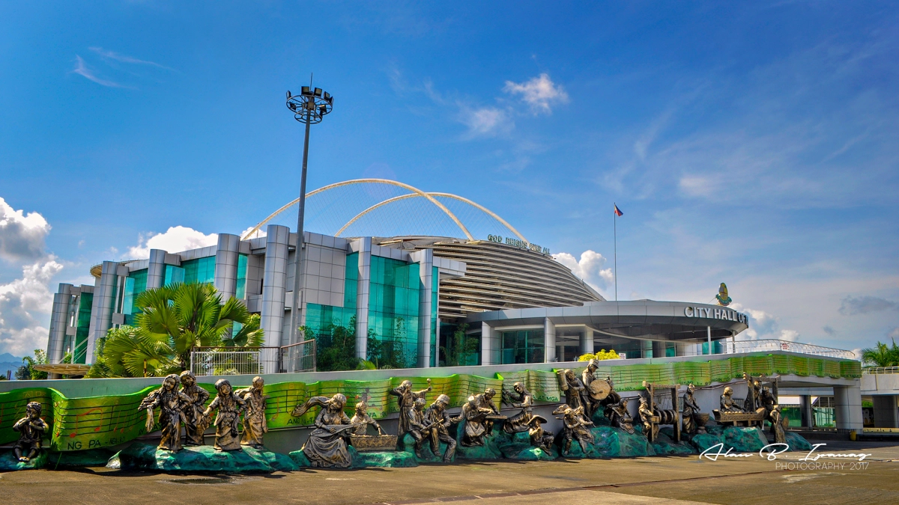
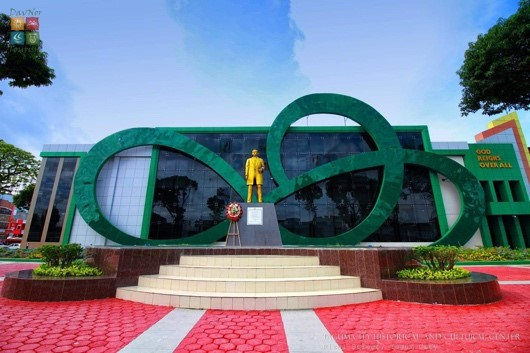
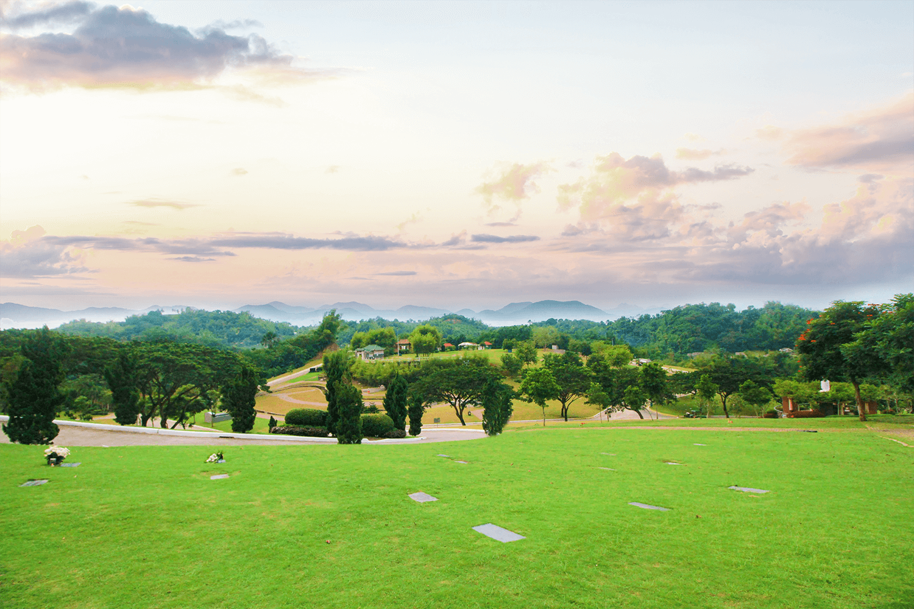
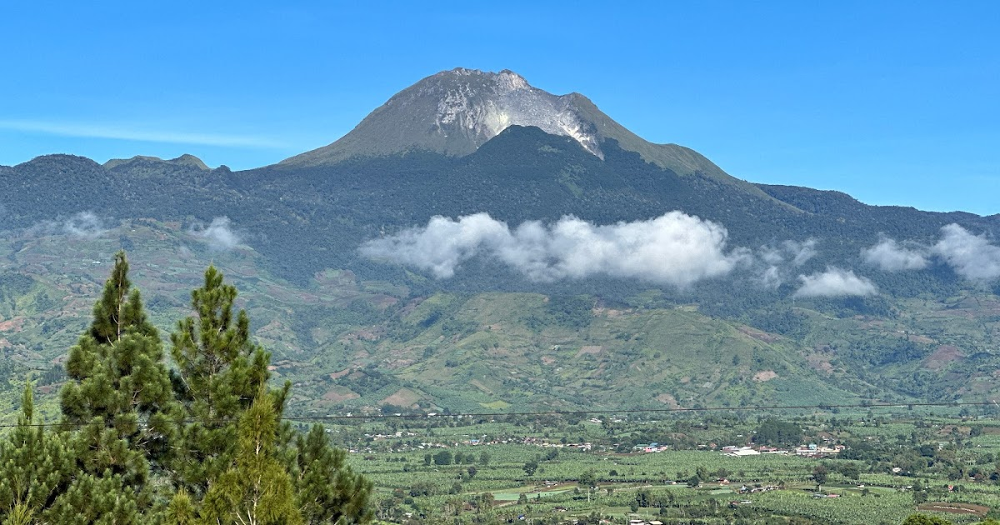
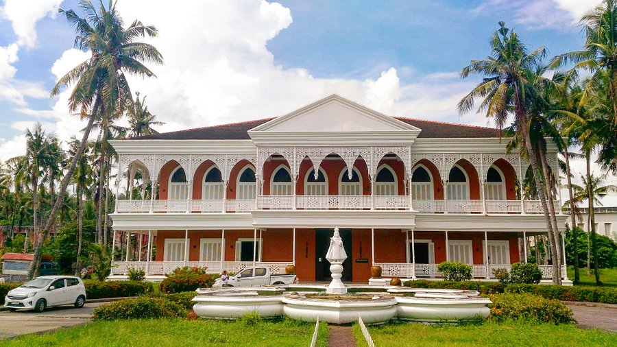
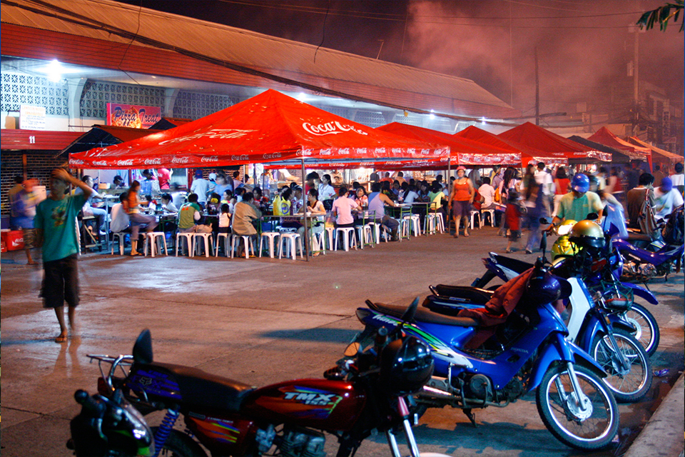

| Home News Tagum Gallery About Us |
Tagum Gallery

Tagum City HallThe heart of the city’s government, featuring a well-maintained structure and surrounding gardens. It's a great place to start exploring Tagum.

Monumento de TagumA historical monument that commemorates the city's journey. It is located near the city hall and offers a bit of history along with its impressive structure.

The Tagum City Golf CourseA popular destination for golf enthusiasts, this course offers a relaxing environment with green landscapes and a variety of amenities.

Mt. Apo (View from Tagum)While not directly in Tagum, the city offers stunning views of Mt. Apo, the highest peak in the Philippines. It’s a great spot for photo opportunities.

Santo Niño ShrineA beautiful church known for its serene atmosphere. The Santo Niño Shrine is a significant religious site in the city, and it’s a place for quiet reflection.

Tagum Night MarketAt exactly 6 p.m. every day, more than a kilometer long of this city’s streets turn into bustling dining hall – sweet-smelling smoke wafting from hundreds of grills set up in tents as a massive army of famished students, office workers, and people from all walks of life troop to feast on various, affordable culinary fares. |